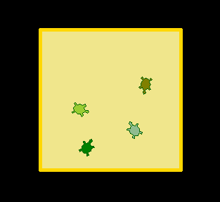

Turtle voor gevorderden¶
Meer turtle commando’s¶
Vormen en stempels
Je turtle lijkt tot nu toe niet echt op een schildpad, maar dat kun je veranderen:
>>> shape('turtle')
>>> color('darkgreen')
Met shape() kun je dus de vorm veranderen. Andere vormen zijn “arrow”, “circle”, “square”, “triangle” en “classic”.
Je turtle kan ook stempelen, net als in Scratch. Probeer deze commando’s eens uit en kijk na elke stap wat er gebeurt:
>>> shape('circle')
>>> color('red')
>>> stempel1 = stamp()
>>> right(90)
>>> forward(50)
>>> shape('square')
>>> color('yellow')
>>> stempel2 = stamp()∏
>>> forward(50)
>>> shape('triangle')
>>> color('blue')
>>> stempel3 = stamp()
>>> forward(50)
>>> shape('classic')
>>> clearstamp(stempel2)
Elke keer dat we stempelen, met stamp(), maken we ook een variabele aan. Die variabelen kunnen we gebruiken om stempels die we gedrukt hebben te verwijderen, met clearstamp(). Daarom is het handig om ze een naam te geven zoals stempel1, stempel2, etc. Dan weet je later nog precies welke stempel dat is geweest.
Turtle posities
Tot nu toe hebben we de turtle verplaatst door vooruit/achteruit te gaan en te draaien, maar je kan ook de turtle opdracht geven om naar een bepaalde plek te gaan:
>>> setpos(50,50)
>>> setpos(-25,75)
>>> setpos(0,0)
Om erachter te komen wat elk getal betekent, kun je het beste 1 van de 2 veranderen en dan zien wat er gebeurt. Het eerste getal noemen we de X-as, het tweede getal noemen we de Y-as.
Soms wil je de turtle verplaatsen zonder dat er een lijn wordt getekend. Je turtle kan zijn pen optillen en neerzetten met penup() en pendown(). Om bijvoorbeeld een vork te tekenen, schrijf je dit:
>>> left(90)
>>> backward(100)
>>> forward(125)
>>> setpos(0,0)
>>> left(90)
>>> forward(25)
>>> right(90)
>>> forward(25)
>>> penup()
>>> setpos(0,0)
>>> pendown()
>>> right(90)
>>> forward(25)
>>> left(90)
>>> forward(25)
>>> penup()
>>> setpos(0,0)
Je kan aan je turtle vragen wat zijn X positie is en wat zijn Y positie is. Je kan die positie ook opslaan in variabelen, zodat je ze later kan gebruiken:
>>> left(30)
>>> forward(100)
>>> xcor()
86.60254037844388
>>> ycor()
49.99999999999999
>>> x = xcor()
>>> setpos(x, 0)
>>> setpos(0, 0)
Inkleuren
Je turtle tekent mooie lijnen, maar je vormen kunnen ook ingekleurd worden:
>>> bgcolor('black')
>>> color('green')
>>> fillcolor('darkgreen')
>>> width(3)
>>> begin_fill()
>>> for x in range(4):
... forward(100)
... right(90)
...
>>> end_fill()
Let op dat het invullen pas gebeurt bij end_fill(). Je kan de invulkleur kiezen met fillcolor(). Als je geen invulkleur kiest, wordt de kleur van je pen gebruikt.
Deze techniek wordt echt indrukwekkend als je het gebruikt bij meer ingewikkelde tekeningen. Met deze code teken je bijvoorbeeld een mooie geel-zwarte ster:
>>> color('yellow')
>>> bgcolor('black')
>>> begin_fill()
>>> for x in range(18):
... forward(200)
... left(100)
...
>>> end_fill()
Tekst en turtle verbergen
De laatste twee technieken die we hier behandelen spreken bijna voor zich. Probeer de onderstaande code maar eens om een deurmat te tekenen. Welke commando’s ken je nog niet? Snap je waar ze voor bedoeld zijn?
>>> write('Welkom!')
>>> penup()
>>> setpos(-20,20)
>>> pendown()
>>> for x in range(2):
... forward(70)
... right(90)
... forward(40)
... right(90)
...
>>> hideturtle()
Tip: hideturtle() is ook een handig commando bij het stempelen. Om de turtle weer te tonen gebruik je showturtle().
Opdrachten¶
Probeer de onderstaande tekeningen na te maken, of bedenk je eigen tekeningen.
Opdracht 3-A
Schildpadden in een zandbak
Opdracht 3-B
TODO: een klok, een ruiten 3 speelkaart.